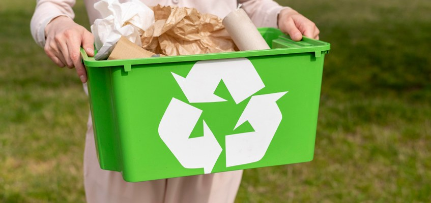

Модерно Рециклиране в София

Нова Система за Рециклиране
София може да въведе модерна система за разделно събиране на отпадъци, която включва умни контейнери и мобилно приложение за проследяване на рециклирането. Системата ще позволи на гражданите да проследяват своя принос към екологията на града.

Умни Контейнери
През 2025 година в София може да се започне инсталиране на умни контейнери за разделно събиране. Тези контейнери ще са оборудвани със сензори, които следят нивото на запълване и автоматично сигнализират за необходимост от извозване.
- Сензори за ниво на запълване
- GPS локация за оптимизиране на маршрутите
- Соларно захранване
- Автоматично пресоване на отпадъците